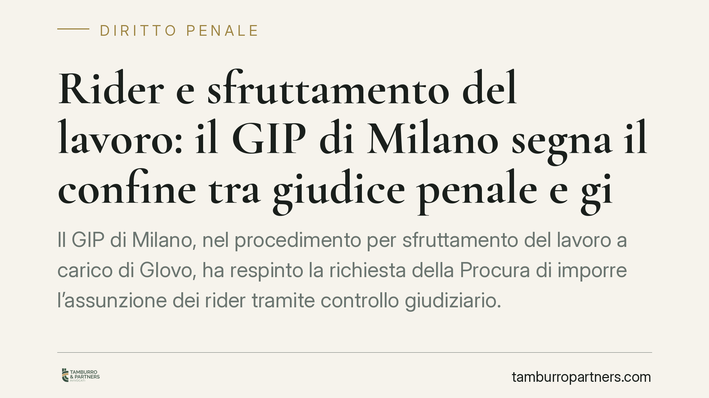

Rider e sfruttamento del lavoro: il GIP di Milano segna il confine tra giudice penale e giudice del lavoro
Il GIP di Milano, nel procedimento per sfruttamento del lavoro a carico di Glovo, ha respinto la richiesta della Procura di imporre l'assunzione dei rider tramite controllo giudiziario. La decisione traccia una linea netta: il giudice penale valuta la dignità della retribuzione, non la qualificazione del rapporto, che resta di competenza del giudice del lavoro.

Il caso
Il procedimento riguarda la posizione di Glovo, indagata per il reato di intermediazione illecita e sfruttamento del lavoro previsto dall'art. 603-bis del codice penale (il cosiddetto "caporalato"). La Procura di Milano aveva chiesto al giudice di intervenire con misure di controllo giudiziario finalizzate, in sostanza, a imporre l'assunzione dei rider come lavoratori subordinati.
Il GIP del Tribunale di Milano ha respinto questa impostazione. Il nodo non è formale: riguarda i limiti di ciò che un giudice penale può decidere quando affronta lo sfruttamento del lavoro nell'economia delle piattaforme digitali.
Inquadramento normativo
Il reato di sfruttamento del lavoro (art. 603-bis c.p., rafforzato dalla L. 199/2016) punisce chi utilizza manodopera in condizioni di sfruttamento approfittando dello stato di bisogno. Tra gli indici di sfruttamento la norma include la retribuzione palesemente difforme dai contratti collettivi o comunque sproporzionata rispetto alla quantità e qualità del lavoro.
Qui si innesta l'art. 36 della Costituzione, che garantisce al lavoratore una retribuzione proporzionata e sufficiente ad assicurare un'esistenza libera e dignitosa. È questo il parametro che il giudice penale può e deve valutare: la paga è dignitosa o no?
Altra cosa è la qualificazione del rapporto, cioè stabilire se il rider sia un lavoratore autonomo o subordinato. Su questo terreno opera il D.lgs. 81/2015, il cui art. 2 estende le tutele del lavoro subordinato alle collaborazioni etero-organizzate. Ma decidere se un rapporto vada riqualificato in subordinato spetta al giudice del lavoro, non al giudice penale. Imporre l'assunzione tramite il processo penale significherebbe, secondo il GIP, forzare i confini della giurisdizione e comprimere la libertà di iniziativa economica tutelata dall'art. 41 Cost.
Le implicazioni pratiche
La decisione ha un valore che va oltre il singolo procedimento.
Per le piattaforme di food delivery il messaggio è duplice. Da un lato, il processo penale non diventa lo strumento per riscrivere l'organizzazione aziendale imponendo la subordinazione. Dall'altro, il fronte penale non si chiude: la sproporzione tra prestazione e compenso resta pienamente sindacabile, e una paga sganciata dagli standard costituzionali può integrare indice di sfruttamento.
Per i rider, la tutela sulla qualificazione del rapporto va cercata nella sede propria: il contenzioso davanti al giudice del lavoro. Le due strade non si escludono, ma corrono su binari distinti.
Per i sindacati, la pronuncia conferma che l'azione collettiva sulla natura del rapporto mantiene la sua centralità nel diritto del lavoro, mentre la leva penale interviene su un piano diverso, quello della soglia minima di dignità retributiva.
Cosa fare in concreto
- Piattaforme e datori: verificate che i compensi corrisposti ai collaboratori siano allineati agli indici di proporzionalità dell'art. 36 Cost. e ai riferimenti dei contratti collettivi di settore; il rischio penale non dipende dalla forma contrattuale ma dall'entità reale della retribuzione.
- Rider e collaboratori: se ritenete che il vostro rapporto sia di fatto subordinato o etero-organizzato, valutate l'azione davanti al giudice del lavoro, che è la sede competente sulla riqualificazione ex art. 2 D.lgs. 81/2015.
- Consulenti aziendali: distinguete con nettezza i due profili di rischio - penale (sfruttamento) e giuslavoristico (qualificazione) - e trattateli con presidi separati, perché una pronuncia favorevole su un fronte non protegge dall'altro.
- Rappresentanze sindacali: documentate condizioni operative, tempi e compensi effettivi: questi dati sono utili sia per il contenzioso lavoristico sia per eventuali segnalazioni in sede penale.
- Tutti: monitorate gli sviluppi del procedimento e l'eventuale orientamento della giurisprudenza di merito, perché il quadro sull'economia delle piattaforme è ancora in evoluzione.
Una linea di confine, non un via libera
La decisione del GIP non assolve nel merito né chiude la partita sulle condizioni di lavoro nel food delivery. Ridisegna, piuttosto, il perimetro dei poteri: il giudice penale presidia la dignità della paga, il giudice del lavoro la natura del rapporto. Una distinzione tecnica che ha ricadute concrete su come imprese e lavoratori dovranno impostare le proprie tutele.
---
Contributo informativo a cura di Tamburro & Partners - Avv. Giuseppe Tamburro. Non costituisce parere legale.
Ogni condominio ha una storia a sé.
Se gestisci un'amministrazione e vuoi un confronto su una specifica questione condominiale, scrivi allo studio. Ti rispondiamo entro un giorno lavorativo.